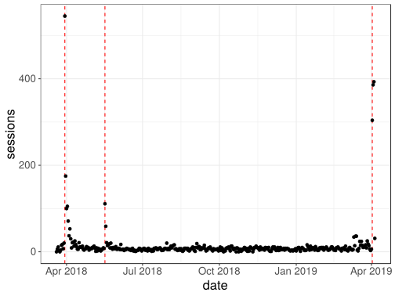

1 First competence: to develop an international network
1.1 Objective
The goal is to develop an international network. There are many advantages of having a large international network, but I won’t develop this point. I want to develop an international network in two different communities, that of the language R (in priority) and that of the analysis of genetic data (my subject of thesis). For that, I try to become more and more visible on the international scene.
1.2 Using Google Analytics and R
To get a sense of who is reading my blog and check my personal webpage, I decided to follow the flow of people on my blog and website using Google Analytics.
I can access Google Analytics API in R:
library(googleAnalyticsR)
ga_auth(".httr-oauth")
ga_account_list()1.3 Website and blog
First, just before the beginning of my thesis, I created my personal website and my blog on R. I try to blog fairly regularly about R and my blog is relayed on R-bloggers, a platform that brings together ~850 R bloggers and is read by thousands of people internationally.
I’m also trying to create R packets and contribute to others via GitHub. GitHub is a good way to make your work visible internationally and facilitate collaborations.
1.4 Twitter, an important tool for work
I also try to be visible on Twitter, which is used by both communities that are of interest for me.
1.4.1 Importance of twitter
Two tweets about my R course:
Teaching an advanced R course https://t.co/2pMG2FWcPs #rstats #DataScience
— R-bloggers ((???)) 30 mars 2018
If you are at the airport today waiting for your ✈️, here's something good to read:
— Colin Fay ((???)) 17 mai 2018
“Advanced #RStats Course” by (???) https://t.co/JXKBI5lON2
Number of visitors of my course:
library(tidyverse)
library(lubridate)
myggplot <- function(..., coeff = 1) {
ggplot(...) + bigstatsr::theme_bigstatsr(size.rel = coeff)
}data_course <- google_analytics(
viewId = "172000044",
date_range = ymd("2018-03-20", Sys.Date()),
dimensions = c("date"), # , "pagePath", "hour", "medium"
metrics = c("sessions") # , "pageviews"
)#> 2018-05-29 11:49:51> Downloaded [71] rows from a total of [71].myggplot(data_course) +
geom_vline(xintercept = ymd("2018-03-30", "2018-05-17"),
linetype = 2, color = "red") +
geom_point(aes(date, sessions))
Here, you can clearly see two peaks of visit of my advanced R course, one when I blogged about it, which was relayed by R-bloggers, and the other peak when Colin Fay (4600 followers) tweeted about it.
1.5 Attending conferences
To develop an international network, it is also very important to attend conferences, which I’m trying to do.
Use bigstatsr #rstats package for matrices larger than 100GB. Great ⚡ talk by (???) at (???) #erum2018 #DataScience pic.twitter.com/magBeDTyVz
— Peter Laurinec ((???)) 15 mai 2018
Conferences I participated in:
eRum 2018: An R package for statistical tools with big matrices stored on disk. [Slides]
Recomb-Genetics 2018: Predicting complex diseases: performance and robustness. [Slides]
LIFE 2018: Predicting complex diseases: performance and robustness. [Slides]
hackseq 2017: Developing advanced R tutorials for genomic data analysis. [Website]
useR!2017: The R package bigstatsr: Memory- and Computation-Efficient Tools for Big Matrices. [Recording]
1.6 A local network
Finally, in addition to taking part in an international community, I think it’s very important to take part in a more local community. That’s why I launched the initiative to make a R community in Grenoble, which starts to be active in September 2017 (https://r-in-grenoble.github.io/).
1.7 Conclusion
Thus, my international network is under development. We can consider that it is a process that takes time, but that the indicators show that I am on the right track.